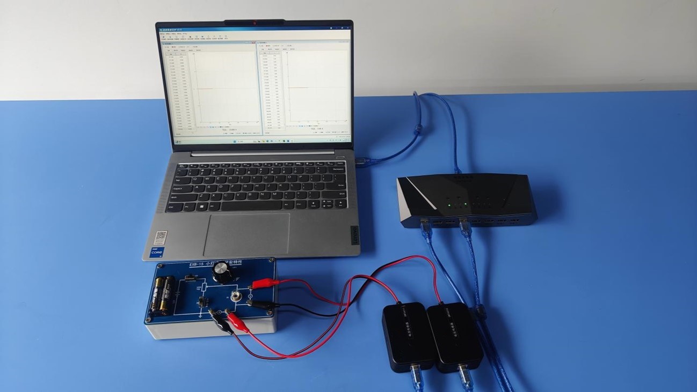
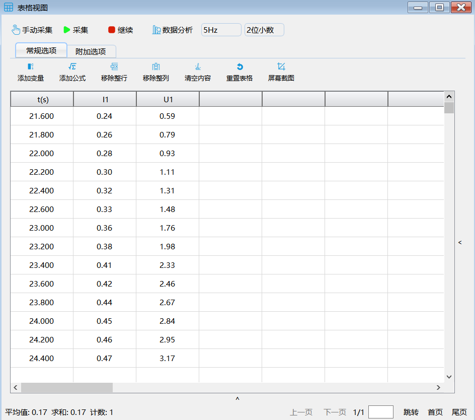
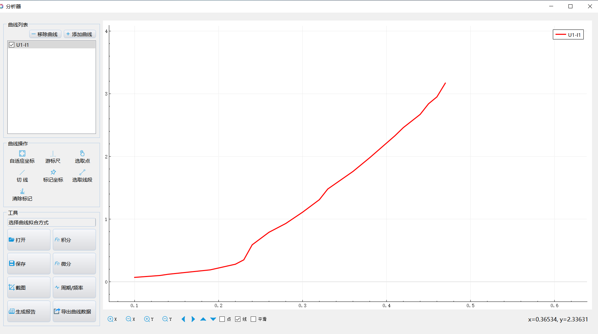

实验二十五 小灯泡的电压电流曲线描绘
【实验目的】
描绘小灯泡的伏安特性曲线，并对其变化规律进行分析。
【实验原理】
伏安特性曲线图常用纵坐标表示电流I、横坐标表示电压U，以此画出的I-U图像叫作导体的伏安特性曲线图。伏安特性曲线是针对导体的，也就是耗电元件，图像常被用来研究导体电阻的变化规律，是物理学常用的图像法之一。阻值恒定的电阻的伏安特性曲线是直线，而小电珠的灯丝的电阻随温度的升高而增大，故伏安特性曲线为曲线。
【实验器材】
数据采集器、电流传感器、电压传感器、学生电源、小灯泡伏安特性曲线实验板、计算机
【实验装置】

【实验操作步骤】
1.搭建好实验环境，按照实验原理图将各元件接到电学实验板上，将选择开关K打向下方，选择“限流”电路；
2.打开实验数据分析软件，连接好数据采集器和电流、电压传感器，对电流、电压传感器调零；
3.打开“表格视图”，将滑动变阻器触片调节至阻值最大端，闭合实验板的电源开关，点击“手动采集”，记录此时的电流和电流值；
4.调节滑动变阻器触片的位置，每调节一次，记录对应的电压、电流值；
5.点击“数据分析”，做出“电压－电流”关系图线；

实验数据

小灯泡的U—I曲线
【注意事项】
注意正确连接电压、电流传感器。
【思考与讨论】
对实验中采用的“限流”和“分压”电路进行分析，比较两种接法的差异；